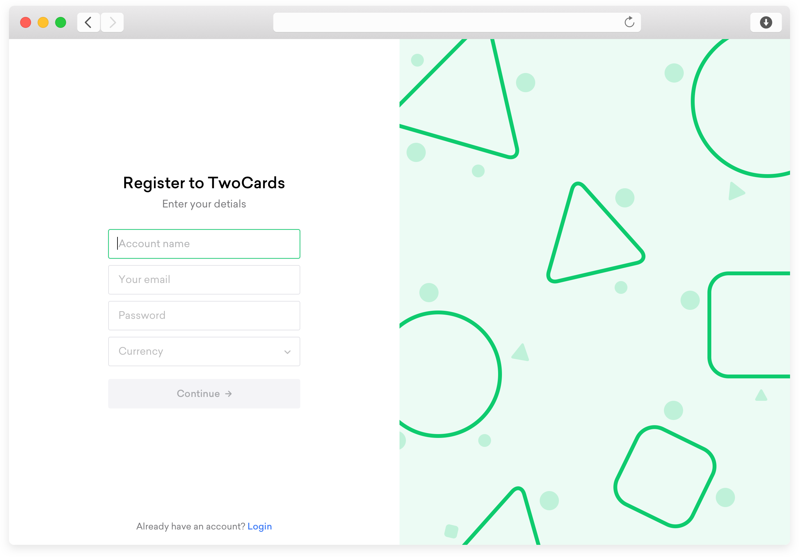

Designing an invoicing software that takes seconds to use.
TwoCards is a venture founded by Duo. As a business, Duo has always felt frustrated sending invoices, and getting paid on time by clients. After speaking to other freelancers and small business we felt like this was a recurring problem throughout the industry. As a team, we invested time and research to design a product that simply worked.
TwoCards was designed to take seconds, allowing you to get back to the real work. Throughout the design process we continually pushed to strip time out of the workflow. We also felt it was important that these invoices felt at home on the web, and weren't designed for an accountant to print out. Sign up and give it a go.